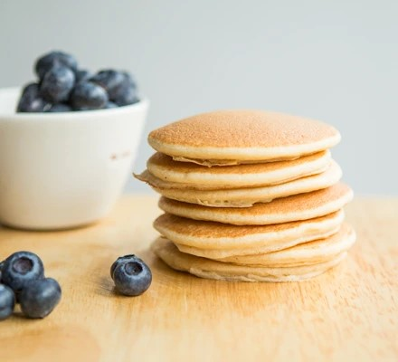
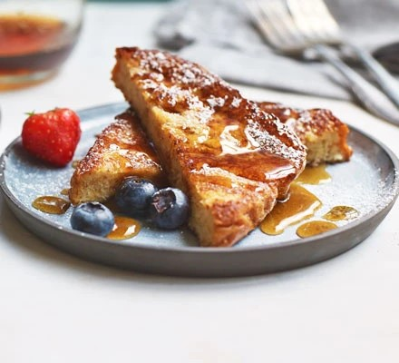

Recomendation



/https://kurio-img.kurioapps.com/20/10/10/a7e9eaa0-1c22-42b0-a11f-0a5ad1d30126.jpeg)
Healthy Pancakes
Prep : 15min | Cook : 30min
French Toast
Prep : 15min | Cook : 25min
Beef Curry
Prep : 15min | Cook : 2Hours
Teriyaki Salmon
Prep : 10min | Cook : 10min
Hot Chocolate
Prep : 5min | Cook : 5min
Banana Pancakes
Prep : 15min | Cook : 5min
Strawberry Smoothie
Prep : 5min | Cook : 5min
Fried Rice
Prep : 10min | Cook :15min


:strip_icc():format(jpeg)/kly-media-production/medias/3147700/original/057328300_1591684921-Ilustrasi_Pizza.jpg)